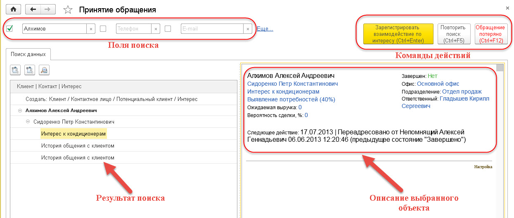
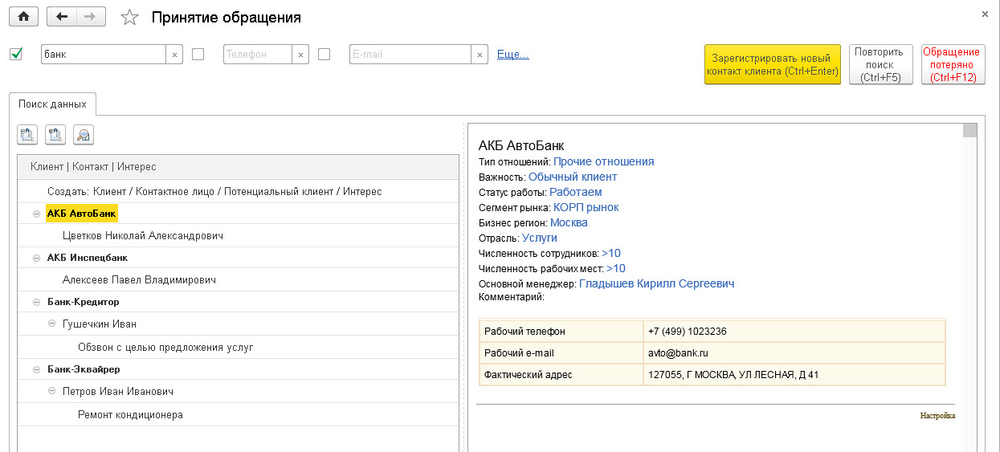
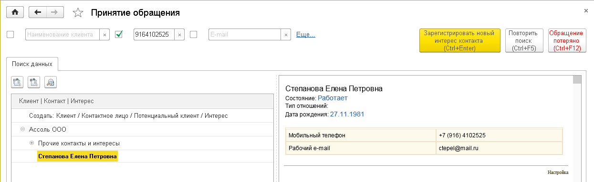
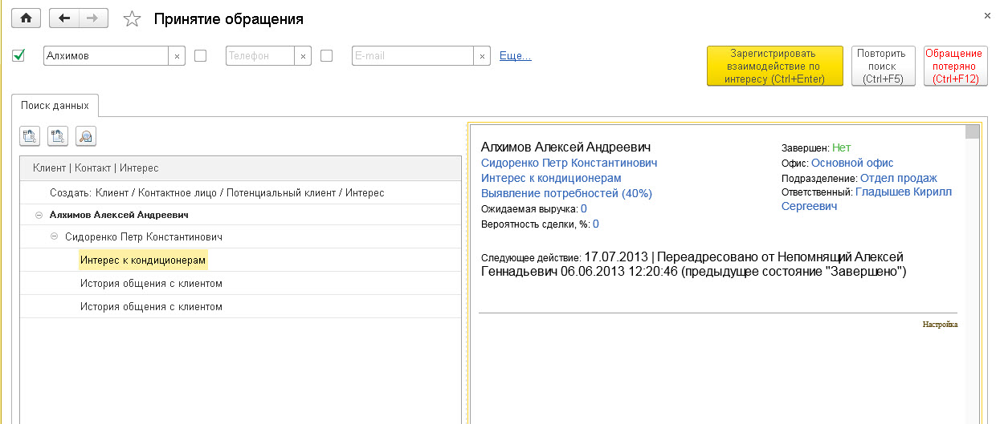
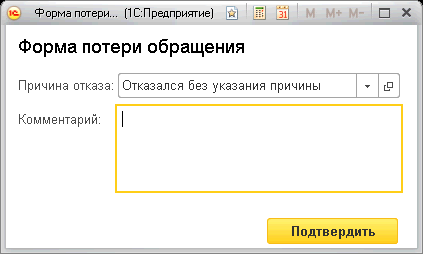
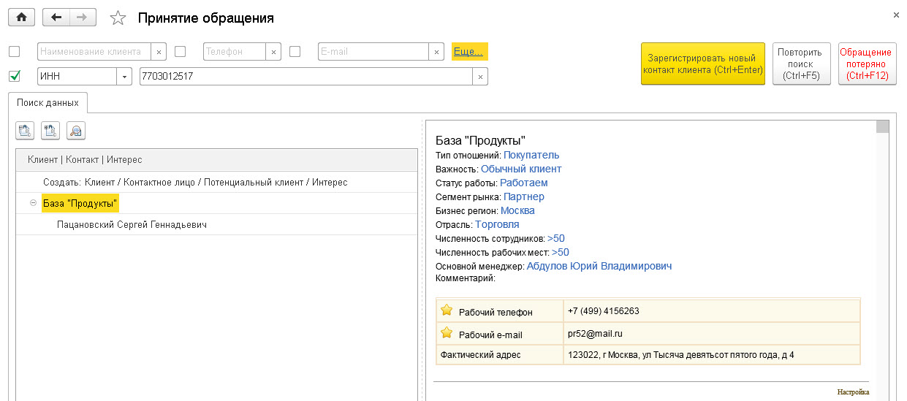
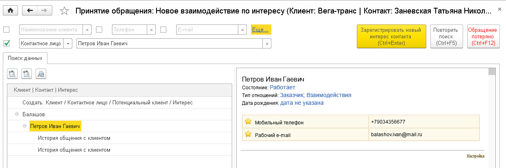
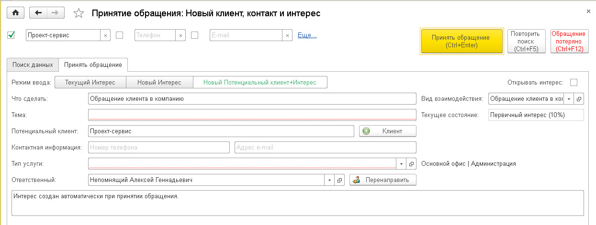
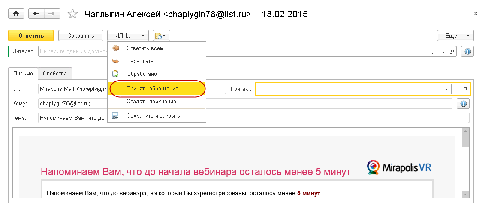

Мастер принятия обращений
В любой CRM-системе крайне важно оперативно и качественно принять обращение Клиента по любому доступному каналу. Поэтому в «1С: CRM» этому процессу уделено большое внимание. Для принятия обращений клиентов служит «Мастер принятия обращений».
Для ручного вызова «Мастера принятия обращений» служит команда «Принять обращение» в разделе меню «Главное» или «Продажи».
Мастер состоит из двух страниц: «Поиск данных» и «Принять обращение».
Поиск данных
На странице «Поиск данных» указываются поля поиска и отображается результат поиска.
Поиск контакта при принятии обращения может осуществляться по трем полям: наименование, телефон и адрес электронной почты.
Алгоритм поиска по этим полям следующий:
- Наименование клиента: поиск выполняется только по наименованию клиента
- Телефон: поиск выполняется по всем видам контактной информации с типом "Телефон", указанных как в карточке клиента, так и его контактных лиц
- Email: поиск выполняется по всем видам контактной информации с типом "Адрес электронной почты", указанных как в карточке клиента, так и его контактных лиц
Для включения текста поля в поиск необходимо установить флаг перед полем (после ввода данных флаг устанавливается автоматически). Поиск осуществляется по всем указанным данным сразу.
Помимо полей поиска, в верхней части формы находится панель с тремя кнопками: кнопка «действий» Мастера желтого цвета, кнопка повтора поиска и кнопка для фиксирования потери текущего обращения. Кнопка «действий» принимает различные значения в зависимости от действий пользователя и результатов поиска.
Результат поиска отображается в виде дерева. Первой строкой всегда идет команда создания нового Клиента и Интереса – «Создать: Клиент / Контактное лицо / Потенциальный клиент / Интерес». При выборе данной строки кнопка «действий» принимает значение «Зарегистрировать нового клиента». Это означает, что пользователю не удалось найти в базе обратившегося клиента или сразу было ясно, что этот клиент новый. А значит нужно зарегистрировать его как нового клиента (потенциального клиента) и создать новый Интерес.
Далее отображаются найденные данные: на первом уровне отображаются Клиенты, ниже их Контакты и еще ниже активные Интересы. Объекты, которые явно найдены по значению поиска, выделяются жирным шрифтом.
Если по значению поиска был найден Клиент, то будут выведены все его активные Интересы и Контакты данных интересов.


Если встать на Клиента, в окне информации будет выведен Портрет клиента – вся основная информация о нем. Кнопка «действий» примет значение «Зарегистрировать новый контакт клиента». При выполнении команды Мастер перейдет к процессу регистрации нового Контакта и созданию нового Интереса.
Если был найден конкретный Контакт клиента, то будут выведены интересы только этого Контакта. При этом все остальные активные Интересы клиента и их Контакты также будут доступны, но по умолчанию они будут свернуты в одной ветке «Прочие контакты и интересы»:

Если встать на Контакт, то в окне информации будет отображена вся его контактная информация. Кнопка «действий» примет значение «Зарегистрировать новый интерес контакта». При выполнении команды Мастер перейдет к процессу создания нового Интереса для данного Контакта.
Если встать на Интерес, то в окне информации будет отображена основная информация о нем. Например, текущий этап, ответственный менеджер, ожидаемая выручка, вероятность сделки и так далее.

|
Примечание: Состав полей информации настраивается для каждого вида объектов - для этого служит команда "Настройка". В форме настройки можно изменить состав полей, их положение, расцветку и прочее. |
В случае если обращение клиента по какой-то причине потеряно и не привело к регистрации хотя бы Потенциального клиента – его нужно зарегистрировать как «потерянное». Для этого служит Кнопка «Обращение потеряно». При этом необходимо будет указать Причину отказа и ввести дополнительный комментарий.

Помимо основных полей поиска есть дополнительный поиск. Поля данного поиска появляются после нажатия на линк «Ещё».
Алгоритм поиска по уникальным полям следюущий:
- ИНН: поиск выполняется только по реквизиту клиента "ИНН"
- Контактное лицо: поиск выполняется только по наименованию контактного лица
- Прочая контактная информация: поиск выполняется по всем видам контактной информации кроме типов "Адрес электронной почты" и "Телефон", указанных как в карточке клиента, так и его контактных лиц

Если встать на Клиента, в окне информации будет выведен Портрет клиента – вся основная информация о нем. Кнопка «действий» примет значение «Зарегистрировать новый контакт клиента». При выполнении команды Мастер перейдет к процессу регистрации нового Контакта и созданию нового Интереса.

Если встать на Интерес, то в окне информации будет отображена основная информация о нем. Например, текущий этап, ответственный менеджер, ожидаемая выручка, вероятность сделки и так далее.
Кнопка «действий» примет значение «Зарегистрировать взаимодействие по интересу». При выполнении команды Мастер перейдет к регистрации нового Взаимодействия по данному Интересу.

Если встать на Контакт, то в окне информации будет отображена вся его контактная информация. Кнопка «действий» примет значение «Зарегистрировать новый интерес контакта». При выполнении команды Мастер перейдет к процессу создания нового Интереса для данного Контакта.
Принятие обращения
Для перехода к Принятию обращения необходимо нажать кнопку текущего действия (желтая кнопка) или нажать Ctrl+Enter. Так же к аналогичному результату приведет двойной клик по нужной строке в списке найденного.
В зависимости от результатов поиска и выбранного объекта на странице «Принять обращения» будут доступны разные действия. Рассмотрим эти варианты.
Если выбрано действие «Зарегистрировать нового клиента», то Мастер переходит к созданию потенциального клиента и нового Интереса.

В этом режиме указываются данные для создания нового Потенциального клиента (наименование клиента, телефон и e-mail) и нового Интереса (тема, продукт, ответственный, описание первого взаимодействия, вид взаимодействия).
Вместо Потенциального клиента можно сразу ввести постоянного Клиента при помощи кнопки «Клиент» около поля потенциального клиента.
В верхней части страницы находится панель Режимов ввода. Ее состав меняется в зависимости от режима работы Мастера и отражает возможные варианты регистрации взаимодействия. Смена режима может потребовать обязательного повторения поиска и выбора другого объекта!
В случае, если Контакт не был найден в базе, его можно добавить. Для этого нужно встать на найденного Клиента и нажать кнопку «Зарегистрировать новый контакт клиента» - Мастер перейдет в режим создания нового Контакта и нового Интереса по нему.
В случае, если Контакт был найден, но по нему нет активных Интересов или необходимо ввести новый Интерес, нужно встать на Контакт и нажать кнопку «Зарегистрировать новый интерес контакта». Мастер переходит в режим создания нового Интереса данного Контакта.
Если в процессе общения выяснилось, что данное обращение по одному из активных Интересов, менеджер регистрирует новое Взаимодействие по нему. Для этого нужно встать на Интерес и нажать кнопку «Зарегистрировать взаимодействие по интересу». Мастер переходит в режим регистрации нового Взаимодействия по данному Интересу. Там он указывает, что ему нужно будет сделать. Например, планирует звонок или очередную встреч.
После ввода всех необходимым данных обращение фиксируется при помощи кнопки «Принять обращение» или нажатия клавиш Ctrl + Enter. Если значения корректны и полны, данные записываются, и окно «Мастера приема обращений» закрывается.
Если пользователь хочет, чтобы после работы Мастера открывались созданные или измененные Интересы, он должен установить флаг «Открывать интерес при принятии обращения». После этого Созданный или измененный Интерес откроется на закладке «Следующее действие».
Другие варианты принятия обращения
Помимо ручного запуска Мастера приема обращения, есть и другие способы регистрации.
Во-первых, когда к "1С:CRM" подключена интеграция с телефонией, Мастер приема обращения запускается автоматически при приеме звонка. В этом случае в поле поиска автоматически подставляется телефон звонящего и выполняется поиск контакта с данным телефоном.
Во-вторых, принять обращение можно из Входящего электронного письма. Для этого надо открыть письмо и в меню «Или...» выбрать команду «Принять обращение».

Автоматически будет проведен поиск по адресу отправителя письма. Если данный адрес зарегистрирован в базе, то контакт будет найден и показан в списке поиска.